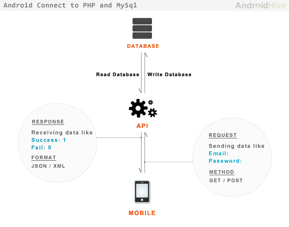

API
JSON
JSON (javascript object notation) - один из самых распространенных форматов сообщений, с помощью которого происходит обмен данными между серверами, сервером и клиентом. Соответствующие файлы имеют расширене .json.
Структура json-объекта
json-объект легко опознать по наличию фигурных скобок, которые структурируют объект, а также записям в кавычках и разделенными двоеточиями. Простейший пример json-объекта:
Пара, разделенная двоеточием - это пара ключа (названия параметра) и значения, которое передается в этом параметре. В табличках аналогом было бы название колонки и значение в ячейке. Ключ всегда указывается в двойных кавычках ("), разделитель ключа и значения - двоеточие, :. Значения могут быть разных типов, в том числе и сложные объекты (другие пары ключ: значение, множество таких пар, массивы значений и т.д.). Пара ключ:значение выделяется фигурными скобками ({}). Как правило, json-объект - это либо одна большая пара ключ-значение, притом, с большой вложенностью. Либо множество таких пар.
Типы значений:
- String: строковое значение, выделяется двойными кавычками. Пример: {"name": "Baldr"}
Number: число, как целое, так и с мантиссой (вида 1e6). Из-за слабой типизации число можно передать как число, так и как строку (5 vs “5”). Пример пары:
{"age": 19}Boolean: логическое значение, слова true и false являются зарезервированными словами для значений ИСТИННО и ЛОЖНО. Пример:
{"is_alive": false}Null: Обычно в json-объектах пропуски не передаются - проще просто не задавать такую пару, все равно при парсинге json-объекта в таблицу на это место автоматически убдет проставлен NULL. Тем не менее, в спецификации есть. Пример:
{"extra": null}Object: Практически всегда в json-ах используются в качестве значения другие неупорядоченные пары ключ:значение, набор таких пар также выделяется фигурными скобками. Таким образом реализуется иерархия данных. Пример:
"death":{"killer":"Loki", "weapon":"omela"}Array: массив значений какого-то типа. Массив выделяется квадратными скобками, значения внутри массива разделяются запятыми: [1, 2, 3], [“a”, “b”]. Значениями массива такде могут быть и другие json-объекты (пары или множества пар ключ:значение). Пример, когда значением является массив json-объектов, каждый из который содержит две пары ключ:значение:
Импорт json-файлов в R
Для импорта json-файлов в R чаще всего используется пакет jsonlite и две его функции:
fromJSON(): в большинстве случаев
stream_in(): изредка встречается формат njson (есть некоторые различия в структуре объекта, расширение все то же), для парсинга которого рекомендуется использовать эту функцию.
При импорте json-объекта в R объект может быть импортирован как таблица (как правило, в редких случаях, когда json-объект плоский и не содержит вложений), чаще все же импортируется как объект класса список (list), то есть, именованный список с подсписками. Доступ к элементам списка классический - с помощью операторов [[ и [. Впрочем, проще и надежнее использовать доступ по оператору $ - из-за того, что практически всегда в json-объектах есть ключ, то в импортированном json-е этот ключ становится названием подсписка.
Допустим, у нас есть вот такой json-файл. По факту это массив из двух json-объектов.
## [{
## "name":"Thor",
## "parents": {
## "father":"Odin",
## "mother":"Jord"
## },
## "weapon": "Mjölnir"
## },
## {
## "name":"Loki",
## "parents": {
## "father":"Farbauti",
## "mother":"Laufey"
## }
## }]При импорте он может быть импортирован как таблица (потому что оба вложенных json-объекта одинаковой длины). При импорте каждый из этих объектов будет обработан как строка в табличке. Ключи объектов задают колонки, значения - строки. Так как для ключа parents значение состоит из двух пар, то колонка parents умножится по количеству пар, и назания ключей сольются через .. Во втором объекте нет ключа weapon, поэтому в соответствующей строке будет проставлено NA:
## name parents.father parents.mother weapon
## 1 Thor Odin Jord Mjölnir
## 2 Loki Farbauti Laufey <NA>При импорте файла в виде списка, каждый объект будет представлен в виде неименованного подсписок списка:
## List of 2
## $ :List of 3
## ..$ name : chr "Thor"
## ..$ parents:List of 2
## .. ..$ father: chr "Odin"
## .. ..$ mother: chr "Jord"
## ..$ weapon : chr "Mjölnir"
## $ :List of 2
## ..$ name : chr "Loki"
## ..$ parents:List of 2
## .. ..$ father: chr "Farbauti"
## .. ..$ mother: chr "Laufey"Если мы хотим получить имя отца Loki, то мы должны обратиться ко второму элементу списка my_json (в который мы импортировали json), так как это неименованные подсписки. Далее элементы уже имеют названия, и к ним можно обращаться с помощью $ (если после $ в RStudio нажать Tab, то появится список элементов этого списка, но это работает только с именованными списками):
## [1] "Farbauti"API
Application Programming Interface
В общем виде API (программный интерфейс приложения, application programming interface) - описание способов, которыми одна компьютерная программа может взаимодействовать с другой программой. Применительно к получению данных от сторонних сервисов через интернет - интерфейс базы данных сервиса, к которому могут обращаться разработчики приложений или третьих сервисов. В таких случаях говорят о Web API или, что корректнее, REST API.
Стандартный пример - сервис погоды. Сервис собирает и хранит данные о погоде у себя в базе данных. Однако предоставлять всем разработчикам мира доступ к базе данных неправильно (и с точки зрения безопасности, и с точки зрения архитектуры и надежности). Поэтому владельцы сервиса предоставляюи API - что-то вроде “прослойки” между внешними разработчиками и своей базой данных.
Процесс выглядит следующим образом:
разработчик делает по определенным правилам запрос к API. Правила запроса описаны в документации API, которую должен предоставить разработчик. Обычно в документации описывают ключевые элементы запроса (как и какими ключевыми словами формировать запрос), значения кодов ошибок, нередко есть “песочница” - можно в браузере попробовать собрать запрос, введя нужные значения в осоответствующие поля, и получить пример запроса и результ, который возвращает API на этот запрос.
API получает запрос, и если запрос составлен корректно, то формирует на основе этого запроса обращение к базе данных сервиса
полученная от БД информация отправляется клиенту (приложению), создавшему запрос. Как правило, для передачи информации используется формат json.

Возможные нюансы:
API может меняться (название категорий и прочие правила), а вот документацию обновить иногда забывают
Могут быть разные формы доступа - и открытый доступ, без какой-либо авторизации, либо авторизация по api_key. Нередко для авторизации используется протокол OAuth
В подавляющем числе случаев API либо закрыты и доступ платный, либо позволяют небольшое количество тестовых запросов
Сервисы, которые предоставляют информацию, обычно имеют разные тарифные планы
Основные шаги при работе с API
определиться с задачей
найти соответствующий сервис
найти документацию по API: на сайтах не всегда есть прямая ссылка на документацию и прочие инструменты разработчиков. Временами проще просто погуглить что-то вроде
<service name> api, например,циан apiполучить API key / пройти OAuth-авторизацию: в зависимости от требвоаний сервиса, могут быть разные требования к процессу авторизации - надо читать документацию и условия использования сервиса.
написать GET/POST-запрос. Либо воспользоваться R-пакетом, который внутри имеет все те же get-запросы, но более дружелюбен к пользователю. В основном имеет смысл при работе с сложными сервисами типа Google Analytics API.
Accuweather
Для примера мы работаем с сервисом, предоставляющим информацию о погоде в определенных географических точках. Сервис имеет возможность искать населенный пункт по названию (в том числе и на русском языке), а также отдает текущие и прогнозные значения погоды в этой точке.
Получение api key
Начало работы выглядит следующим образом, если следовать справке на сайте:
Registration
- Click “Register” or “Sign Up” on the homepage.
- A registration form will be displayed.
- Enter the required information in the form and click the “Create new account” button to submit the form.
- An email with login instructions will be sent to the email address that you supplied in the form.
- Use the one-time login link in the email to access your account information and set your password.
Package Purchase
- Click “Packages and Pricing” in the main menu.
- Select the package you would like to purchase.
- Enter your billing information.
- Confirm purchase.
- Create an app to get your API key.
App Creation
- Click “My Apps” in the main menu.
- Click the “Add a new App” button.
- Enter the required information and click the “Create App” button.
- The new App will be active immediately. Click on the App name to view your API Key and details about your App.
- Use your API Key to access the AccuWeather APIs.
Для нас важны пункты, которые касаются создания приложения и получения API key. Приложение - это, грубо говоря, регистрация какой-то клиентской точки, с которой API будет получать запросы. При работе из R приложения как такового нет, можно сказать, что наш скрипт, который получает информацию от сервиса - своего рода такое “приложение”. В реальной жизни аткими приложениями могут встроенный виджет на сайт или в операционную систему, виджет или приложение в мобильном устройстве, какой-нибудь третий сервис по сличению и предсказанию погоды и т.д.
Помимо просто авторизации, такая архитектура позволяет владельцам сервисов управлять доступом - например, создавать различные тарифные планы с разным количеством запросов, которые можно сделать к сервису (базовый план предполагает всего 50 запросов в сутки).
Я уже зарегистрировал приложение и получил API key (ключ будет опубликован в слаке в канале general, либо у меня по запросу). Это приложение идет по отдельному тарифному плану, поэтому количества запросов должно быть достаточно для учебных целей.

GET-запрос
Первый этап работы - получение location key, внутренний идентификатор геоточки. Это можно сделать разными способами - по координатам, по списку городов (если входит в топ 150), по почтовому индексу, по текстовому поиску (который можно ограничить до страны).
Будм работать с поиском города по названию, с фильтрацией по стране. Документация по этому методу находится здесь, там же есть песочница.
Первое, что мы видим на странице - ссылка resource url. Это базовая ссылка метода API. То есть, запрос на поиск по названию и получение информации по городу состоит из этой ссылки и дополнительных параметров.
Resource url. {countryCode} - плейсхолдер для указания, в какой стране ищем город по названию.
Ниже на странице есть поля для введения API key (api_key) и текстового поля, в которое вводим название города (q). Прочие параметры необязательны.
После введения этих параметров можно нажать кнопку send the request - запрос по введнным параметрам будет отправлен, и в вкладках Request, Response, cURL можно будет увидеть, какой запрос был отправлен и что было получено в ответ. Чуть ниже, в Response Error Details перечислены, какие коды ошибок может вернуть API. Это стандартные коды ответов сервера (список можно посмотреть здесь), мы ожидаем получить код 200 - запрос обработан и сервер вернул требуемую информацию.
Нас интересует вкладка cURL - на ней лучше всего видно, как и из чего формируется запрос (curl -X GET - консольная команда, сам запрос в кавычках), вместо ХХХХ должен быть API key:
В этом запросе вместо {countryCode} у нас стоит RU, так как мы хотим ограничить область поиска Россией. Знак ? маркирует, что после него идут параметры запроса - api_key и q (которые мы и указывали в параметрах запроса в форме). Параметры идут парой, через знак =, без пробелов: параметр=значение (например, q=Moscow). Объединение параметров происходит через знак &: apikey=ХХХХ&q=Moscow.
В вкладке Response представлен ответ сервера на запрос - это информация о клиенте, параметры запроса и собственно сам ответ сервера в виде json-объекта. Полный список параметров представлен ниже, в Response Parameters. Интересующий нас location key находится в значении ключа "Key": "294021" (для Москвы).
Соответственно, чтобы получить информацию о погоде в Москве надо использовать этот ключ в уже в других методах API, которые находятся в разделах.
GET-запросы в R
В R для создания запросов используется пакет httr и функции GET(), POST() (если предполагается отправка данных профиля клиента и запрос меняет состояние на сервере) и content() для извлечения данных из ответа сервера.
Для того, чтобы сделать запрос, необходимо собрать его из соответствующих параметров (то, что на сайте делали в формах). Так как запрос - по сути, строка, то для сборки запроса можно использовать разные функции склеики объектов в строки, такие как paste() или glue() пакета glue.
# подключаем пакет
library(httr)
# указываем resource url, сразу с указанием страны
city_search <-'http://dataservice.accuweather.com/locations/v1/cities/RU/search'
# указываем переменную для хранения токена, вместо XXXX должен быть реальный ключ
key <- '?apikey=XXXX'
# указываем переменную для хранения запроса названия города
search_query <- '&q=Moscow'
# собираем все в один url-запрос
city_url <- paste(city_search, key, search_query, sep = '')## [1] "http://dataservice.accuweather.com/locations/v1/cities/RU/search?apikey=XXXX&q=Moscow"Полученный url используем в функции GET(). У функции есть и другие аргументы, однако в данный момент нам достаточно одного:
Результат функции GET() - сложный объект, в котором интересующая нас информация хранится достаточно глубоко. Поэтому воспользуемся функцией content() все того же пакета httr, которая вернет нам json-объект в виде сложного списка с вложениями (list). Этот список должен содержать ту же информацию, которую мы получили на странице метода, когда тестировали запрос в формах:
## List of 1
## $ :List of 15
## ..$ Version : int 1
## ..$ Key : chr "294021"
## ..$ Type : chr "City"
## ..$ Rank : int 10
## ..$ LocalizedName : chr "Moscow"
## ..$ EnglishName : chr "Moscow"
## ..$ PrimaryPostalCode : chr ""
## ..$ Region :List of 3
## .. ..$ ID : chr "ASI"
## .. ..$ LocalizedName: chr "Asia"
## .. ..$ EnglishName : chr "Asia"
## ..$ Country :List of 3
## .. ..$ ID : chr "RU"
## .. ..$ LocalizedName: chr "Russia"
## .. ..$ EnglishName : chr "Russia"
## ..$ AdministrativeArea :List of 7
## .. ..$ ID : chr "MOW"
## .. ..$ LocalizedName: chr "Moscow"
## .. ..$ EnglishName : chr "Moscow"
## .. ..$ Level : int 1
## .. ..$ LocalizedType: chr "Federal City"
## .. ..$ EnglishType : chr "Federal City"
## .. ..$ CountryID : chr "RU"
## ..$ TimeZone :List of 5
## .. ..$ Code : chr "MSK"
## .. ..$ Name : chr "Europe/Moscow"
## .. ..$ GmtOffset : num 3
## .. ..$ IsDaylightSaving: logi FALSE
## .. ..$ NextOffsetChange: NULL
## ..$ GeoPosition :List of 3
## .. ..$ Latitude : num 55.8
## .. ..$ Longitude: num 37.6
## .. ..$ Elevation:List of 2
## .. .. ..$ Metric :List of 3
## .. .. .. ..$ Value : num 155
## .. .. .. ..$ Unit : chr "m"
## .. .. .. ..$ UnitType: int 5
## .. .. ..$ Imperial:List of 3
## .. .. .. ..$ Value : num 508
## .. .. .. ..$ Unit : chr "ft"
## .. .. .. ..$ UnitType: int 0
## ..$ IsAlias : logi FALSE
## ..$ SupplementalAdminAreas:List of 1
## .. ..$ :List of 3
## .. .. ..$ Level : int 2
## .. .. ..$ LocalizedName: chr "Tsentralny"
## .. .. ..$ EnglishName : chr "Tsentralny"
## ..$ DataSets :List of 7
## .. ..$ : chr "AirQualityCurrentConditions"
## .. ..$ : chr "AirQualityForecasts"
## .. ..$ : chr "Alerts"
## .. ..$ : chr "DailyPollenForecast"
## .. ..$ : chr "ForecastConfidence"
## .. ..$ : chr "FutureRadar"
## .. ..$ : chr "MinuteCast"Получить интересующий нас location key можно простым обращением к элементам списка и его подсписков:
## [1] "294021"Функции для получения погоды
Функция для получения ключа города в России (вместо XXXX надо указать свой ключ):
# library(glue)
get_location_key <- function(city_name, apikey=XXXX) {
method <- 'http://dataservice.accuweather.com/locations/v1/cities/RU/search'
# если использовать пакет glue
# lk_req <- glue('{method}?apikey={apikey}&q={city_name}')
lk_req <- paste0(method, '?apikey=', apikey, '&q=', city_name)
lk_data <- GET(lk_req)
lk_data <- content(lk_data)
key <- lk_data[[1]]$Key
return(key)
}
# сокращенная запись
# get_location_key <- function(city_name, apikey=XXXX) {
# method <- 'http://dataservice.accuweather.com/locations/v1/cities/RU/search'
# lk_req <- paste0(method, '?apikey=', apikey, '&q=', city_name)
# content(GET(lk_req))[[1]]$Key
# }
get_location_key('Moscow')## [1] "294021"Функция, которая возвращает погоду по указанному ключу города в России:
get_current_conditions <- function(location_key, apikey=XXXX) {
method <- 'http://dataservice.accuweather.com/currentconditions/v1/'
cc_req <- glue('{method}/{location_key}?apikey={apikey}')
# cc_req <- paste0(method, '/', location_key, '?apikey=', apikey)
cc_data <- content(GET(cc_req))
cc_string <- glue('Погода: {cc_data[[1]]$WeatherText}, температура: {cc_data[[1]]$Temperature$Metric$Value} C')
return(cc_string)
}
get_current_conditions(294021)## Погода: Mist, температура: 2.2 CФункция, которая объединяет две функции выше:
# если мы вдруг создали отдельный скрипт с функциями и хотим их подключить
# source('./src/weather_functions.R')
get_weather <- function(main_city_name, main_apikey=XXXX) {
# чтобы можно было указывать города на криллице
main_city_name <- URLencode(main_city_name)
key <- get_location_key(city_name = main_city_name, apikey = main_apikey)
weather <- get_current_conditions(key, apikey = main_apikey)
return(weather)
}
get_weather('Moscow')## Погода: Mist, температура: 2.2 CДополнительные материалы
Перевод неплохой статьи про основные особенности json-файлов.
Более формальная документация json.
Список 100+ сайтов API с документацией. К сожалению, немалая часть этих API сложные, требующие авторизации и многих других наюнсов. Зато понятно, насколько API распространены.
Еще один список, фактически, поиск по базе данных API, с возможностью фильтрации. Сайт (верстка) иногда глючит.
Примеры документации ЦИАН и Гисметео. Полезны в первую очередь примерами русскоязычных документаций. На сайте ЦИАН также есть интерактивная песочница, в которой можно потестить запросы.